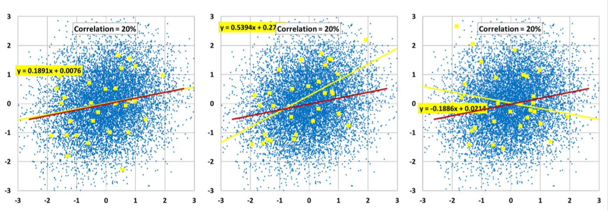
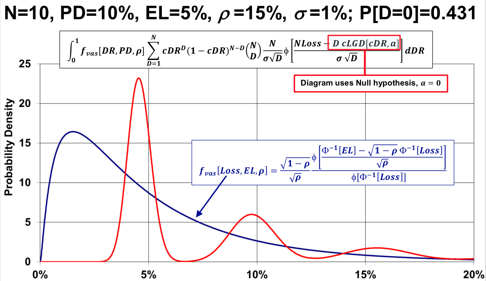

Notes on Credit Risk
Standard Simulation Model on Credit Portfolio
Credit Risk
Lenders, such as banks, are subject to many kinds of risks. among which credit risk is the most likely to cause bank failure.
- Credit risk
- Market risk
- Operation risk
- Reputation risk
Each loan is part of a legal agreement that requires the borrower to pay interest and repay principle on schedule, while some borrowers are required to obey specified covenants, such as maintaining earning above a certain threshold.
If the borrower fails to follow the agreement, the lender holds the borrower to be in default, which can be money default or covenant default. Purchaser of public bonds only experiences money default.
At default, the loan agreement calls for fee to be paid by the borrower, gives the bank power to seize collateral (for secured loans), and has a cross default provision (where all loans are in default once one loan is in default).
In the 20th century, most banks did not define default until they discovered a model that could help them manage credit risk.
Rating Agencies
There are 3 major Nationally Recognized Statistical Rating Organizations (NRSRO) to which firms pay to rate their bonds to increase liquidity.
- Standard & Poor
- Moody’s
- Fitch
Under S&P ratings, the grades are:
- Investment grade: AAA, AA, A, BBB
- Non-investment grade: BB, B, CCC, CC
- Selectively defaulted: SD
- Defaulted: D
D and PD
Let D be the default indicator of a loan, taking only two values: 0 and 1. PD is the probability of default annually.
$$PD = P[D = 1] = \mathbb{E}D$$
By mathematical identity:
- Knowing PD, we can simulate D by a Bernoulli Distribution with parameter as PD.
- Given data on D, we can calculate the implied PD.
In a portfolio of N firms, the portfolio default rate, DR, equals:
$$DR = \dfrac{\sum{D}}{N}$$
Exposure, Recovery and LGD
Exposure is the amount that is owed to the borrowers. Recovery is measured in either of two ways:
- Market price of the loan at the time of default
- Discounted future cash flows back to the time of default
LGD (Loss Given Defaults) is a random variable with values usually between 0 and 1:
$$LGD = 1 - \dfrac{Recovery}{Exposure}$$
For a defaulted loan, there are two ways to measure recovery/LGD. For a current loan, there is a distribution for LGD. The expectation is written as:
$$\mathbb{E}LGD$$
US investment grade bond LGD is about 0.20%, while non-investment grade is about 3.60%. Bank loans are almost alwasy senior to bonds and have lower LGD.
Loss and EL
Loss is measured as a fraction of exposure:
$$Loss = D \times LGD$$
EL is the expected loss. Because D and LGD are indepndent, so:
$$\mathbb{E}L = \mathbb{E}[D \times LGD] = PD \times \mathbb{E}LGD$$
Lenders often need to estimate and include EL in the spread they charged.
$$Spread = RiskFreeRate + \mathbb{E}L$$
Change Of Variable
Note the LGD is often measured in fractions. To change the measure to dollar amount, we need to use the Chain Rule.
Given the pdf of LGD:
$$pdf_{LGD}[x]$$
We define the function g such that:
$$LGD^{dollar} = g(LGD) = LGD \times Exposure$$
Hence the function g-inverse is:
$$LGD = g^{-1}(LGD^{dollar}) = \dfrac{1}{Exposure} \times LGD^{dollar}$$
The partial derivative can be expressed as:
$$\dfrac{\partial g^{-1}(x)}{\partial x} = \dfrac{1}{Exposure} $$
By definition:
$$cdf_{LGD^{dollar}}[x] = P[LGD^{dollar} < x] = P[LGD < g^{-1}(x)] = cdf_{LGD}[g^{-1}(x)]$$
Taking derivative on both sides and with chain rule:
$$pdf_{LGD^{dollar}}[x] = pdf_{LGD}[g^{-1}(x)] \times |\dfrac{\partial g^{-1}(x)}{\partial x}|$$
Finally:
$$pdf_{LGD^{dollar}}[x] = pdf_{LGD}[\dfrac{x}{Exposure}] \times \dfrac{1}{Exposure} $$
Simulate Portfolio Loss On One Single Loan
We know that:
$$Loss = D \times LGD$$
To simulate loss, we first simulate D:
1 | Draw x ~ Uniform[0, 1] |
Then simulate LGD based on the pdf of LGD. Multiple each D and LGD to get Loss. Repeat the process to produce a distribution of Loss.
Simulate Portfolio Loss On N Independent Loan
Assume the default of each of the N loan is independent and have the same probability of default, PD:
$$D_{i} \sim Bernoulli[PD]$$
Then the total number of defaults follows binomial distribution:
$$\sum D_{i} \sim Binomial(PD, N)$$
$$var\sum D_{i} = N \times PD \times (1-PD)$$
However, based on historically data, the variance is much higher than that of the binomial distribution. Hence default correltion needs to be introduced.
Simulate Portfolio Loss On N Correlated Loan
Assume that there is a latent unobserved variable zi that is responsible for the default of firm i, i.e. firm i defaults if:
$$z_{i} < \Phi^{-1}(PD_{i})$$
Assume any two firms i and j are jointly normal. Denote the correlation between zi and zj:
$$ \rho_{i, j} $$
Let ri, j be the correlation between asset return of firm i and j, we know that almost certainly:
$$ \rho_{i, j} < r_{i, j} $$
Denote PDJ as the probability that both firm i and j default:
$$ PDJ = P[D_{i} = 1, D_{j} = 1] = \int_{-\infty}^{\Phi^{-1}[PD_{i}]} \int_{-\infty}^{\Phi^{-1}[PD_{j}]} \phi_{2}(z_{i}, z_{j}, \rho_{i, j}) ,dx,dy $$
To calculate PDJ with python:
1 | import numpy as np |
Returns:
1 | Pr[D1=1, D2=1]: 0.0515 |
Now that we have the Di, we can simulate portfolio loss rate, given the LGD distribution and exposures for each firm.
$$ Portfolio Loss Rate = \dfrac{\sum D_{i} \times LGD_{i} \times Exposure_{i}}{\sum Exposure}$$
Denote Dcorr to be the correlation between Di and Dj:
$$Dcorr[D_{i}, D_{j}] = \dfrac{cov[D_{i}, D_{j}]}{\sqrt{var[D_{i}]var[D_{j}]}} \\ = \dfrac{PDJ - PD_{i}PD_{j}}{\sqrt{PD_{i}(1-PD_{i})PD_{j} (1-PD_{j})}}$$
Note that holding PDi, PDj fixed:
- greater
Dcorr=> greaterPDJ - greater ρ => greater
PDJ- ρ between -1 and 1 => PDJ between 0 and min[PDi, PDj]
Copula
When we model more than three firms, pair-wise correlation is not enough to determine the entire distribution of outcomes. For example, there are N PD’s and N(N-1)/2 pair-wise correlations while we want to calculate 2N outcomes. Hence we introduce the Gauss copula which helps describe the group-wise correlations.
Consider a set of multivariate normals:
$$ (Z_1, Z_2, …, Z_N) $$
The quantiles of the set are uniformly distributed by definition:
$$ (\Phi(Z_1), \Phi(Z_2), …, \Phi(Z_N)) \sim (U_1, U_2,, …, U_3)$$
The copula of the set (Z1, Z2, …, ZN) is defined as the joint cumulative distribution function of (Φ(Z1), Φ(Z2), …, Φ(ZN)):
$$\mathbb{C}{Z_i}(\vec{x}) = cdf{\Phi(\vec{Z_i})}(\vec{x}) \\ = P[\Phi(Z_1) \leq x_1, \Phi(Z_2) \leq x_2, …, \Phi(Z_N) \leq x_N] \\ = P[Z_1 \leq \Phi^{-1}(x_1), Z_2 \leq \Phi^{-1}(x_2), …, Z_N \leq \Phi^{-1}(x_3)] \\ =cdf_{\vec{Z_i}}(\Phi^{-1}(\vec{x}))$$
The Gauss copula is as follow. Note that among all possible copula, the Central Limit Theorem defines and supports the Gauss copula:
$$ \mathbb{C}^{Gauss}{Z_i}(\vec{x}) = cdf^{Gauss}{\vec{Z_i}}(\Phi^{-1}(\vec{x})) = \Phi(\Phi^{-1}(x_1), \Phi^{-1}(x_2), … , \Phi^{-1}(x_N))$$
In fact, the copula does not contain any information on the marginal distribution. Here we set the marginal distribution FZ to follow standard normal only as an example, but it can be anything continuous such that:
$$ F(Z_i) \sim U_i$$
And so:
$$\mathbb{C}{Z_i}(\vec{x}) = cdf{F(\vec{Z_i})}(\vec{x}) \\ = P[F(Z_1) \leq x_1, F(Z_2) \leq x_2, …, F(Z_N) \leq x_N] \\ = P[Z_1 \leq F^{-1}(x_1), Z_2 \leq F^{-1}(x_2), …, Z_N \leq F^{-1}(x_N)] \\ =cdf_{\vec{Z_i}}(F^{-1}(\vec{x}))$$
In the context of default modeling, we assume that each company’s default follows Bernoulli and simulate with standard normal distribution:
$$P[D_{i}=1] = P[Z_{i}<\Phi^{-1}(PD_{i})] = PD_{i} \\ P[D_{i}=0] = P[Z_{i}\geq\Phi^{-1}(PD_{i})] = 1-PD_{i}$$
The probability of all firms default at the same time is by definition:
$$P[\vec{D}=1] = cdf_{\vec{Z_i}}(\Phi^{-1}(\vec{PD}))$$
Note that given a pair-wise correlation matrix Σ, this probability can take any values between 0 and the lowest single firm default probability.
$$P[\vec{D}=1] \in [0, min(\vec{PD_{i}})]$$
Now we assume all firms’z are connected by the Gauss copula, which suggests a single value for the probability of all defaulting.
$$\mathbb{C}^{Gauss}{Z_i}(\vec{PD}) = cdf^{Gauss}{\vec{Z_i}}(\Phi^{-1}(\vec{PD})) = \int_V \phi_{N}[\vec{z_{i}}, \Sigma] ,d\vec{z_{i}} \\ V = \cup_{i = 1}^{N} ,, (-\infty, \Phi^{-1}(PD_i)]$$
With python we can either numerically evaluate the integral or use simulation to calculate the probability that all firms default at the same time.
1 | import numpy as np |
Returns:
1 | Probability Of All Default: 0.017 |
Note that the compared to the other copulas, the Gauss copula requires only a pair-wise correlation matrix and the PD to tell a lot of information. Most of the times the Gauss copula has not been shown invalid, while the calibration of the marginals and correlation matrix are often proved erroneous.
Simulate Rating Transitions
The default model only has two states, 0 and 1:
$$P[0 \rightarrow 1] = PD \\ P[0 \rightarrow 0] = 1-PD \\ P[1 \rightarrow 1] = 1 \\ P[1 \rightarrow 0] = 0$$
To simulate rating transitions, we require two matrix:
- Transition Matrix: $$P[i \rightarrow j], \forall i, j$$
- Cost Matrix, e.g. the loss due to deterioration of borrowers: $$cost[i \rightarrow j], \forall i, j$$
Factor Model
Single Factor Model
We construct the single risk factor model with latent variable Zi:
$$ Z_i = -\sqrt{\rho_i}Z + \sqrt{1-\rho_i}X_i $$
The pair-wise correlation between two firms i and j’s latent variables is:
$$ corr[Z_i, Z_j] = \rho_{i, j} = \sqrt{\rho_i\rho_j} $$
Where:
- Z and Xi are Independent
- Z is the
systematic factorthat affects all firms. If Z increase, all Zi decrease and become more likely to default. Z summarizes the effects of all observable macroeconomic factors plus the effects of unobservable factors. - Xi is the
idiosyncatic factorthat affects only firm i’s latent variable - Zi ~ N(0, 1) by construction
- {Zi} are jointly normal and connected by a
Gauss copula
cDR and Vasicek
Define Conditional (Expected) Default Rate (cDR) as:
$$cDR_i[z] = P[Z_i < \Phi^{-1}[PD_i] | Z = z] $$
This gives the final form of cDR, which is called the Vasicek formula, named after Oldrich Vasicek. Note that the Vasicek formula is monotonic in z and in PD, i.e., higher the z/PD, higher the cDR.
$$ cDR_i[z] = \Phi[\dfrac{\Phi^{-1}[PD_i] + \sqrt{\rho_i}z}{\sqrt{1-\rho_i}}]$$
The expected default rate for firm i is always PDi, since:
$$ D_i \sim Bernoulli (PD_i) $$
However, when Z is known, the expected default rate is cDRi. Firms are now uncorrelated as Z is known:
$$ (D_i | Z = z) \sim Bernoulli (cDR_i[z]) $$
If there are large numbers of identical firms with uniform PD and ρ, the default rate of such asymptotic portfolio follows the unconditional Vasicek distribution.
$$ cDR \sim Vasicek[PD, \rho] $$
The unconditional Vasicek pdf can be derived with change-of-variable technique. Note that we eliminate z and the pdf only has parameter PD and ρ:
$$ pdf_{cDR}[cDR] = \phi[\dfrac{\sqrt{1-\rho},\Phi^{-1}[cDR] - \Phi^{-1}[PD]}{\sqrt{\rho}}]\dfrac{\sqrt{1-\rho}}{\sqrt{\rho},\phi[\Phi^{-1}[cDR]]}, ;;x \in [0, 1]$$
The mean of cDR is PD:
$$\mathbb{E}cDR = PD $$
Multi-factor Model
Suppose that there are two jointly normal systematic risk factors ψ and ω, and that there are two group of firms depending on each of the factors:
$$ Z_{i}^{\psi} = -\sqrt{\rho^{\psi}}\psi + \sqrt{1-\rho^{\psi}}X_i^{\psi} \\ Z_{j}^{\omega} = -\sqrt{\rho^{\omega}}\omega + \sqrt{1-\rho^{\omega}}X_j^{\omega}$$
Between the two groups:
$$ corr[Z_{i}^{\psi}, Z_{j}^{\omega}] = \sqrt{\rho^{\psi}\rho^{\omega}}corr[\psi, \omega] $$
Note that:
- If corr[ψ, ω] = 1, this becomes the single factor model and that:
$$ corr[Z_{i}^{\psi}, Z_{i}^{\omega}] =\sqrt{\rho^{\psi}\rho^{\omega}}$$
- If corr[ψ, ω] < 1, the cross-correlations are less than that in the single factor case. It is called
diversification. - With multi-factor model, risk becomes
sub-additive, as oppose toadditivein the single factor models. This means that the risk in the portfolio is less than the sum of the cDRs’. - The
Moody's Factor Modelattribute each Zi to about 250 factors, along with a firm-specific idiosyncratic factor.
Basel II Capital formula
The Bank For International Settlements is in Basel, Switzerland. The Basel Committee on Bank Supervision drafted legislation requiring banks to hold minimum capital, e.g. Basel II, Basel III, etc.
The Basel II formula is an Asymptotic Single Risk Factor model, where the portfolio is large enough for the Law of Large Number to work and it generalizes the Vasicek Distribution and include a diverse choice of PD and ρ within the portfolio. The core of the capital requirement for credit capital is the inverse CDF of Vasicek Distribution.
$$ K = [LGD \times \Phi[\dfrac{\Phi^{-1}[PD] + \sqrt{R} \Phi^{-1}[0.999]}{\sqrt{1-R}}] - LGD \times PD] \times (\dfrac{1 + (M - 2.5) \times b}{1 - 1.5 \times b})$$
Inverse Vasicek (with parameter PD and ρ):
$$ cdf^{-1}_{Vasicek}[x] = \Phi [\dfrac{\Phi^{-1}[PD] + \sqrt{\rho}\Phi^{-1}[x]}{\sqrt{1-\rho}}]$$
Note:
- K is the capital requirement per dollar of wholesale loan.
- LGD is the average LGD in historical downturn conditions
- R (correlation) = 0.12 + 0.12 x exp(-50 x PD)
- b = [ 0.11852 - 0.05478 x log (PD) ]2
- M is maturity
Making sense of the Basel II formula:
- Capital requirement is for
loss, as oppose to only default, hence the formula multiplies by LGD. - Capital requirement is for
unexpected loss, hence the formula subtracted the expected loss LGD X PD. Theexpectedportion is handled by bank reserves. - Loans might deteriorate without defaulting, hence a
maturity adjustmentis added to impose higher capital for longer maturity loan. - The estimation of PD and LGD is performed by the banks and supervised by bank supervisor.
Estimation, Statistical Test and Overfit
Estimating PD
Firms differ widely in their credit quality, and PD tend to change over time as well. So a firm’s PD is neither known or fixed. We analyze analogous firms with identical credit ratings to estimate PD.
Method 1, for all A-rated firms in the dataset:
$$ Annual PD = \dfrac{Defaults Next Year}{TotalNumberOfFirms} $$
Method 2, for all A-rated firms in the dataset:
$$ Average PD = \dfrac{AllHistoricalDefaults}{TotalNumberOfFirms} $$
Method 3, estimate PD as a parameter in a pdf describing A-rated firms. This tries to find a distribution that best fits the data. We will focus on this method.
$$ PD = Best,,Estimate,,Of,, Parameter $$
Method Of Moments
Given a dataset {Xi}N, we set the moments of the Vasicek distribution equal to the moments of the data.
First moment:
$$ \mathbb{E}_{vasicek}X = PD = \dfrac{\sum X_i}{N}$$
Second moment (unbiased, using N-1 in denominator):
$$ \mathbb{V}{vasicek}X = \int_0^1 (x - PD)^2 pdf{vasicek}[x, PD, \rho]dx = \dfrac{\sum (X_i - PD)^2}{N-1} $$
Note:
- The method of moment matches the broad features of distribution with the data
- The solution is not unique. Choices can be made between central moment/raw moment, lower moment/higher moment.
- By Jensen’s Inequality, functions of moments are not moments of functions
Maximum Likelihood Estimation
The MLE method chooses parameter values that make the data most likely under the assumed distribution. MLE matches the distribution to the data as a whole, as oppose to M.o.M. which only matches the moments. The MLE fits the PDF to the dataset.
When data is not highly dispersed, however, the MLE estimate tend to be close to the M.o.M. estimate.
The MLE method is biased estimate that choose parameters that maximize the likelihood function. Given a dataset {Xi}N, we assume the true default rates follow Vasicek distribution. The likelihood function is:
$$ L[PD, \rho] = \prod pdf_{vasicek}[X_i, PD, \rho]$$
Often we try to maximize the log-likelihood function, i.e. find PD and ρ such that:
$$ \dfrac{\partial \log L[PD, \rho]}{\partial PD} = 0, ;; \dfrac{\partial \log L[PD, \rho]}{\partial \rho} = 0 $$
Hypothesis Testing & Wilks’ Theorem
We does not assert truth, as truth is often unknown. With a given set of data, we can only assert some models are better in predicting the future behavior of similar data.
We called the simpler model the null hypothesis, the more complicated ones the alternative hypothesis. The null generally nests under the alternative, i.e. the alternative becomes the null when some parameters are set to certain values.
We prefer the null, because it is simpler, and by doing so we avoid Type 1 error, which is the rejection of a true null.
Hence we only reject the null if the alternative fits the data significantly better through a statistical test.
Wilks Theorem asserts that if:
- There is an asymptotic amount of data
- The null hypothesis is true
Then D has a distribution that approaches the χ2 distribution (with df = number of extra parameters in the alternative), given dataset {Xi}N:
$$ D = - 2 \log \dfrac{L_0}{L_1} = 2(\log L_1 - \log L_0) $$
The likelihood ratio is defined as follow. It is less or equal than 1 as the alternative is more flexible, and it leads to more probability densities given certain data:
$$ \dfrac{L_0}{L_1} = Likelihood;;Ratio \leq 1 \\ L_0 = max_{MLE}[; pdf[; X_i’s ;|; Null;];] \\ L_1 = max_{MLE}[; pdf[; X_i’s ;|; Alternative;];]$$
We reject the null hypothesis if D statistic is a tail observation that either the null is not true or the null is true and something (type 1 error) unlikely happen. We reject the null when:
$$ D > Critical;; Value_{95th;percentile}^{df} $$
For example when df = 1, the critical value = 3.84, we will reject the null with 95% confidence when:
$$ D > 3.84 $$
Overfit
An overfit model makes worse forecast than a simpler model.
We assume the population data (X, Y) follows bivariate normal distribution:
$$ X, Y \sim N^2(0, \Sigma=\begin{bmatrix}1 & \rho \\ \rho & 1\end{bmatrix}) $$
Given ρ, the population regression line is:
$$ \hat{Y} = \rho X $$
The sample regression line is:
$$ \hat{Y} = bX + a $$
From a sample of 30 observations of (X, Y), ordinary least square (OLS) is performed to find the in-sample p-value for the coefficient and R2. MSE is used to evaluate forecast error.
- When ρ = 0.8, the sample regression line (yellow) is close to the population regression line (red):

- When ρ = 0.2, the sample regression line does NOT match well.

This shows that when the population has a week relationship (ρ = 0.2), estimates of slope are more dispersed.
Now we look at the relationship between statistically significance and MSE. The population `Mean-Squared Error` (MSE) is an `out-of-sample` measure of forecast errors. The population MSE does NOT depend on any in-sample data:
$$MSE = \int_{-\infty}^{+\infty} \int_{-\infty}^{+\infty} (Y - \hat{Y})^2 ;pdf[X, Y];dXdY = 1 + a ^2 + b ^2 - 2b \rho$$
We can see that the population regression (b = ρ, a = 0) would minimize MSE, by taking partial derivatives. We can also see that higher the ρ, lower the MSE.
$$ \dfrac{\partial MSE}{\partial a} = 0 \rightarrow a = 0, ; \dfrac{\partial MSE}{\partial b} = 0 \rightarrow b = \rho$$
A regression is significant (at 95% confidence) if the p-value for the coefficient b is less than 0.05.
We have observed that when population has a weak relationship (ρ = 0.2):
- Forecasts by
significant regressionstend to havegreaterMSE. - Forecasts by
regressions with higher R-squaretend to havegreaterMSE.
This is because the strong relationship suggested by the regression does NOT forecast the week population relationship well.
When population has a strong relation (ρ = 0.8), however, the significant regression/high R-square holds out-of-sample.
Conditional LGD Risk
cLGD
The history of bond LGD shows that LGD is elevated when default rate is elevated. The elevation is shown to be moderate and similar across different debt types:
$$ DR \uparrow ;;\rightarrow LGD \uparrow $$
It is important to model LGD appropriately in different economic conditions. Like cDR, we define cLGD:
$$ Loss = D \times LGD\\ \mathbb{E}L = PD \times \mathbb{E}LGD\\ cLoss = cDR \times cLGD $$
Note that:
$$\mathbb{E}cDR = PD\\ \mathbb{E}cLoss = \mathbb{E}L\\ however, \mathbb{E}cLGD \neq \mathbb{E}LGD $$
There are two ways to calculate ELGD:
$$\mathbb{E}LGD = \dfrac{\mathbb{E}L}{PD} = \mathbb{E} \dfrac{cDR \times cLGD}{PD}$$
Futhermore,
$$\mathbb{E}cLGD < \mathbb{E}LGD $$
Where:
- EcLGD is the average LGD over conditions
- ELGD is the average LGD over different loans
ELGD is higher than EcLGDbecause when cLGD is higher, cDR/PD is also higher, which increase the probability weight on the higher cLGDs, while in EcLGD, higher cLGD does not have higher weight.
Frye-Jacobs
Modeling cLGD separately from cDR introduces complexity and potential overfit to the cLoss model. Instead, the Frye-Jacobs LGD function assumes that both cDR and cLoss follow Vasicek distribution, and infers cLGD as a function of cDR.
Frey-Jacobs assumptions:
cDR and cLoss are
comonotonic.If cDR goes up, cLoss must go up.
If cDR is in its qth quantile, then cLoss must also be in its qth quantile. This implies that there is a cLGD function of cDR:
$$ cLGD[cDR] = \dfrac{F^{-1}{cLoss}[F{cDR};[cDR];]}{cDR} $$
cDRfollows Vasicek distribution, which stems from the simplest portfolio structure:- Large number of Firms
- Each firm same PD
- Each pair-wise ρ the same (same PDJ)
- Gauss copulas
$$ cDR \sim Vasicek [PD, \rho] $$
Distribution of
cLossdoes NOT depend of the definition of default. \times This implies the distribution of cLossdoes nothave separate parameters for PD and ELGD. Itdoeshave a parameter EL.cLossfollows Vasicek distribution
$$ cLoss \sim Vasicek [PD, \rho] $$
cLossandcDRhave the same ρ parameter. \times This ensure that the LGD function ismonotonic
Finally,
$$ cLGD[cDR] = \dfrac{\Phi[\Phi^{-1}[cDR] - k]}{cDR}, where ;; k = \dfrac{\Phi^{-1}[PD] - \Phi^{-1}[\mathbb{E}L]}{\sqrt{1-\rho}}]$$
Observations:
- cLGD is strictly monotonic with range (0, 1), for all k
$$ \dfrac{\partial LGD[DR]}{\partial DR} > 0, \forall; k $$
- cLGD increases slowly, and similarly for all k, at low cDR
- Elasticity is greatest for loans wth low LGD.
$$ Elasticity = \dfrac{\dfrac{\partial LGD[DR]}{\partial DR}}{\dfrac{LGD[DR]}{DR}} $$
Frye-Jacobs: Develop Alternative Hypothesis
Introduce an additional sensitivity parameter to test the slope of the LGD function.
We know that:
$$ \mathbb{E}L = \mathbb{E}[cDR \times cLGD[cDR]] $$
In integration form:
$$ \mathbb{E}L = \int_0^1 x \times cLGD[x] \times pdf_{cDR}[x, PD, \rho] ;dx $$
Bring in the Frye-Jacobs cLGD function:
$$ \mathbb{E}L = \int_0^1 \Phi[\Phi^{-1}[x] - \dfrac{\Phi^{-1}[PD] - \Phi^{-1}[\mathbb{E}L]}{\sqrt{1-\rho}}] \times pdf_{cDR}[x, PD, \rho] ;dx $$
Note that EL is in both lhs and rhs, divide both EL by ELGDa:
$$ \mathbb{E}L = \int_0^1 \mathbb{E}LGD^a \Phi[\Phi^{-1}[x] - \dfrac{\Phi^{-1}[PD] - \Phi^{-1}[\dfrac{\mathbb{E}L}{\mathbb{E}LGD^a}]}{\sqrt{1-\rho}}] \times pdf_{cDR}[x, PD, \rho] ;dx $$
Note that we have identified a new LGD function:
$$cLGD[cDR] = \dfrac{\mathbb{E}LGD^a \Phi[\Phi^{-1}[cDR] - \dfrac{\Phi^{-1}[PD] - \Phi^{-1}[\dfrac{\mathbb{E}L}{\mathbb{E}LGD^a}]}{\sqrt{1-\rho}}]}{cDR} $$
Analyzing the choice of a:
- When a = 0, the cLGD function is the Frye-Jacob formula.
- When a = 1, cLGD = ELGD, which implies cLGD does not depend on conditions:
$$ cLGD[cDR] = \mathbb{E}LGD $$
Frye-Jacobs: Hypothesis Test
We introduce finite portfolio, which brings randomness into the D’s and LGD^{dollar}s.
- We assume the finite portfolio is uniform and all N loans have the same PD and ρ
- We assume that given portfolio cDR, the number of defaults is binomial:
$$ \sum D \sim Binomial (cDR, N) $$
- We assume that LGD is normally distributed around cLGD, with σ = 0.2. Note under this assumption, ELGD = cLGD which correspond with a = 1.
$$ LGD \sim N(cLGD [cDR], \sigma^2) $$
Under finite portfolio, the probability of 0 defaults is:
$$ P[\sum D = 0] = \int_0^1 (1-x)^N pdf_{cDR}[x] ;dx$$
When conditional on cDR and Σ D > 0, the average portfolio LGD rate is normal:
$$ LGD_{portfolio} \sim N(cLGD [cDR], \dfrac{\sigma^2}{\sum D})$$
Let Y ~ N(0, 1) be a standard normal variable, then LGD becomes:
$$ LGD = cLGD[cDR] + \dfrac{\sigma}{\sqrt{\sum D}}Y $$
Now calculate Loss based on DR and LGD:
$$ Loss = \dfrac{\sum D}{N} \times LGD = \dfrac{cLGD[cDR]\sum D + \sigma Y\sqrt{\sum D}}{N}$$
Use change-of-variable technique to calculate the pdf for Loss:
$$ pdf_{Loss}[x] = pdf_Y[g^{-1}(x)] \times |\dfrac{\partial g^{-1}(x)}{\partial x}|$$
Where:
$$ g^{-1}(Loss) = Y = \dfrac{N Loss + cLGD[cDR]\sum D}{\sigma\sqrt{\sum D}} \\ |\dfrac{\partial g^{-1}(x)}{\partial x}| = \dfrac{N}{\sigma\sqrt{\sum D}}$$
Finally, the pdf of loss conditional on Σ D and cDR:
$$ pdf_{Loss | \sum D, cDR}[x] = \dfrac{N}{\sigma\sqrt{\sum D}} \phi[\dfrac{N x + cLGD[cDR]\sum D}{\sigma\sqrt{\sum D}}] $$
Removing the conditional, the distribution of loss in a uniform portfolio, with N loans, same PD and ρ and the cLGD function, becomes:
$$ pdf_{Loss}[x] = \int \sum_{\sum D = 1}^{N} pdf_{Loss | \sum D, cDR}[x] \times pmf_{\sum D | cDR}[\sum D] \times pdf_{cDR}[cDR] ;dcDR \\ where;; pmf_{\sum D | cDR}[\sum D] = \binom{N}{\sum D}cDR^{\sum D}(1-cDR)^{N-\sum D}$$
Here is a plot of the the unconditional loss density in a finite (N = 10) portfolio in red and loss density in an infinite portfolio (Vasicek) in blue. (note that the plot use D to denote Σ D):

Now we have the pdf for loss, we an test the hypothesis:
- H0: a = 0
- H1: a = MLE Based On Moody’s Loss data
As a result MLE(a) = 0.01 based on all loan data and the test failed to reject the null. Same with other bonds and bonds/loans data combination. We conclude that the Fyre-Jacob model is consistent with Moody’s data
Vender Estimation
Distance-To-Default and EDF
Robert Merton argues that:
- the default of firm i depends on its asset return
- Merton asserts that a firm defaults if and only if the value of its asset drops below the value of its liability, i.e. its asset return is too low
- joint default of firm i and j depends on PD and asset return correlation
Moody’s suggests that loan contains the option to default, and attempts to use risk-neutral probability to estimate the probability of default. In the context of a put:
$$ \mathbb{P}[S_T < K ] = \Phi(-d_2) = \Phi(-\dfrac{\log{\dfrac{S_T}{K}} + (r-\dfrac{\sigma^2}{2})T}{\sigma \sqrt{T}}) $$
Under Moody’s assumption, the firm has an option to default on its assets once it drops below its liability. Here, liability is the strike price, for which Moody’s uses D, or “default point”, to denote short term debt plus half of long term debt to represent liability. DD stands for Distance-To-Default, suggested by Merton. So the probability of default is:
$$ \mathbb{P}[Asset < D] = \Phi(-DD) = \Phi(-\dfrac{\log{\dfrac{Asset}{D}}}{AnnualVolatilityOfAssets})$$
Moody’s then estimates the value and volatility of the assets (unobservable) based on the value and volatility of the market capitalization (observable).
However, since Φ(-DD) gave very poor estimate for the default probability, Moody’s sets the EDF(Estimated Default Frequency) of a firm equal to the average historical default rate of firms with the same Distance-To-Default. An EDF uses DD to find historical analogs of current firms.
Correlation
Merton assumes that the correlation ρ between the latent variable Z’s is equal to the asset return correlation r.
However, data suggests that correlation estimated from credit data is less than the correlation based on asset returns. Hence a credit portfolio model that uses asset correlation to estimate ρ overstates credit risk.
References:
- FINM-36702 Portfolio Management II, Jon Frye, University of Chicago